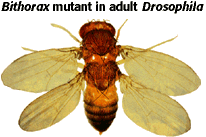

Developmental Mechanisms Problem Set
Problem 1 Tutorial: Definition of a homeotic gene
| Homeotic genes: |
Tutorial
A. Determine the developmental fate of groups of cells in segments of an organism B. Are unique to the development of flies and worms C. Regulate the metabolism of lactose in prokaryotic cells D. Regulate the cell cycle in eukaryotic cells E. All of the above
|
Pattern formation is essential to the development of all organisms. Once the basic pattern of a developing organism has been established, homeotic genes tell each segment what to develop into.
Mutations in homeotic genes have given scientists insight into how these genes work. One such mutation is the bithorax mutation in Drosophila. The bithorax complex of genes controls the development of the fly's abdomen and posterior thorax. Wild-type flies have three thoracic segments--T1, T2, and T3. T2 produces the fly's wings and legs, whereas T3 gives rise to a pair of legs and halteres (tiny wings). In the bithorax mutation pictured to the right, T3 has developed exactly like T2, resulting in a complete extra pair of wings. |
 Photo by Ed Lewis |


Contact the Development Team
http://biology.arizona.edu
All contents copyright © 1996. All rights reserved.